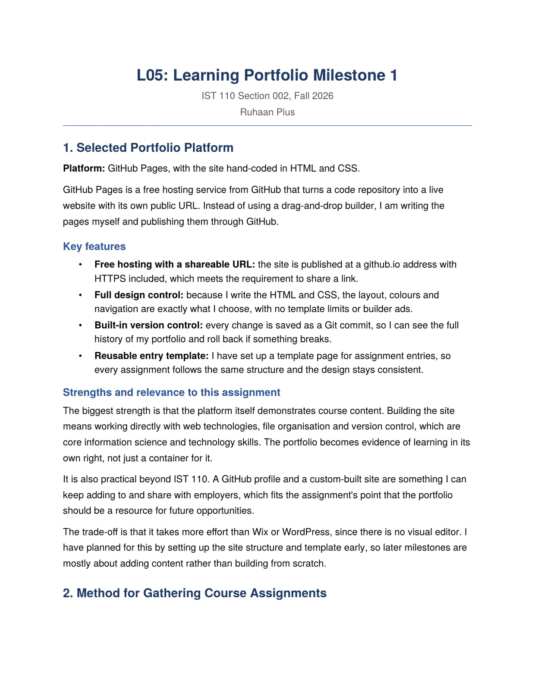

L05 Learning portfolio milestone 1
The task
Choose a portfolio platform, explain how I'd collect my coursework through the semester, and outline the portfolio's sections.
What I made
A four-page plan. I chose GitHub Pages, with the site written in plain HTML and CSS, because building it uses the same skills the course covers and the result is something I can keep adding to after IST 110. I described how I'd collect work as I went (a OneDrive folder for each stage, a file naming pattern and a checklist) and outlined the nine sections this site now follows.

See the other 3 pages


Download the original (PDF, 4 pages, 54 KB)
Reflection
Reflection in progress.